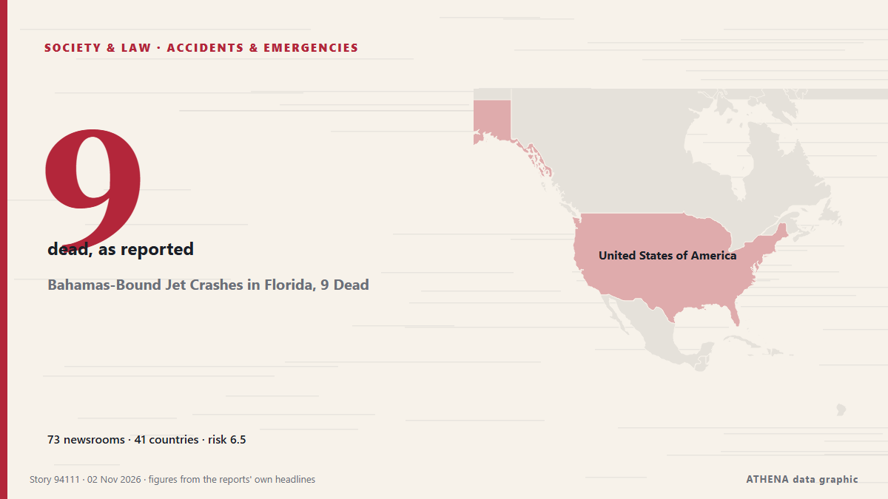

Bahamas-Bound Jet Crashes in Florida, 9 Dead

A USD$2 million business jet carrying nine people has crashed in Florida. из Sydney Morning Herald
Независимые источники: 73 издания в 41 стране, с 31 окт.; первым сообщил Indian Express; освещение на пике. ATHENA оценивает риск как высокий (6.5/10), прежде всего из-за тяжести описываемого ущерба и географического и отраслевого охвата. Уверенность — 86 % (высокая); подтверждают независимые источники: 73 издания, средняя надёжность источников — 74 %. СМИ по странам: Великобритания (7), Австралия (4), Соединенные Штаты (4). Освещение: с 31 окт. по 2 нояб., 45 ч.
Почему это важно: Мониторинг следит за конфликтом вокруг Израиля, Газы, Западного берега и Ливана — военными событиями, гуманитарной ситуацией и дипломатией — так, как их освещает мировая пресса.
Что изменилось: 84 новых сообщений от 69 редакций за 24 часа до 2 нояб..
Первый заголовок: Private jet crashes in Florida, leaving multiple dead
Заголовки приводятся на английском языке, как они были опубликованы.
Коротко в цифрах
Отобрано, оценено и написано по опубликованной методологии ATHENA. Ни один редактор не вмешивается в отдельные события. Как это создаётся ›
| 31 Oct 03:01 UTC | 1 |
|---|---|
| 31 Oct 06:01 UTC | 1 |
| 31 Oct 09:01 UTC | 0 |
| 31 Oct 12:01 UTC | 0 |
| 31 Oct 15:01 UTC | 0 |
| 31 Oct 18:01 UTC | 0 |
| 31 Oct 21:01 UTC | 0 |
| 01 Nov 00:01 UTC | 0 |
| 01 Nov 03:01 UTC | 0 |
| 01 Nov 06:01 UTC | 1 |
| 01 Nov 09:01 UTC | 0 |
| 01 Nov 12:01 UTC | 0 |
| 01 Nov 15:01 UTC | 0 |
| 01 Nov 18:01 UTC | 5 |
| 01 Nov 21:01 UTC | 29 |
| 02 Nov 00:01 UTC | 15 |
| 02 Nov 03:01 UTC | 15 |
| 02 Nov 06:01 UTC | 13 |
| 02 Nov 09:01 UTC | 2 |
| 02 Nov 12:01 UTC | 3 |
| 02 Nov 15:01 UTC | 0 |
| 02 Nov 18:01 UTC | 2 |
| 01 Nov 20:56 UTC | 3.8 |
|---|---|
| 01 Nov 21:06 UTC | 2.5 |
| 01 Nov 21:42 UTC | 5.8 |
| 01 Nov 22:05 UTC | 6.4 |
| 01 Nov 22:34 UTC | 6.8 |
| 01 Nov 22:57 UTC | 6.4 |
| 02 Nov 03:42 UTC | 5.9 |
| 02 Nov 08:57 UTC | 7.0 |
| 02 Nov 11:18 UTC | 6.4 |
| 02 Nov 18:40 UTC | 6.5 |
Откуда эти цифры
Значимость
Риск
Уверенность
Освещение — кто сообщил и когда
заголовок в оригинале · открывает источник- Indian Express · ИндияA 13-year-old goal & a t-shirt: Manisha realises departed father’s dream
- Daily Tribune · ФилиппиныFLOWERS FOR THE DEPARTED
- Manchester Evening News · ВеликобританияThe husband and wife team bringing ‘aspirational’ private jet experiences to Manchester Airport
- APA (English) · АзербайджанPrivate jet crashes in Florida, leaving multiple dead
- The Canadian Press (via CityNews) · КанадаJet nosedives and erupts into fireball near busy roadway in South Florida. All 9 on board died
- Sydney Morning Herald · Австралия‘We’re going to crash’: Chilling audio captures final seconds of Florida jet disaster
- Sydney Morning Herald · АвстралияBusiness jet with nine people on board crashes in Florida
- The Independent · ВеликобританияAll 9 aboard business jet killed after fiery crash in Palm Beach County
- NEWS.am (English) · АрменияBusiness jet carrying nine people crashes in Florida: No survivors
- The Jerusalem Post · ИзраильFAA: Plane crashes in Palm Beach, Florida after rapid dive, killing nine passengers
- The Guardian · ВеликобританияAll nine people aboard business jet that crashed in Florida have died
- Business Insider · Соединенные ШтатыWhat we know so far about the Learjet 60 private plane that crashed in Florida
- TASS (English) · РоссияNine people killed in business jet crash in Palm Beach, USA — US Transportation Secretary
- CBC News (alternative feed) · КанадаAll 9 aboard killed after plane crashes in Florida, officials say
- Forbes Business · Соединенные ШтатыLearjet Crashes In Florida’s Palm Beach County, Killing 9
- Jamaica Observer · ЯмайкаNine dead as Learjet slams into Florida roadside — US official
- Hespress English · МароккоNine dead as Learjet slams into Florida roadside
- Anadolu Agency (English) · ТурцияAircraft crashes in residential area of Florida, killing all 9 on board
- Irish Mirror · ИрландияFlorida plane crash: Private jet carrying nine crashes into trailer park sparking huge fireball
- Times of India · Индия9 dead as Florida jet crashes near busy roadway
- ABC News Australia · АвстралияNine die as business jet crashes on Florida roadside
- Simple Flying · Соединенные ШтатыBreaking: Learjet 60 With 9 People Onboard Fatally Nose Dives In Missile-Like Crash Near Mar-A-Lago
- TRT World · ТурцияNine killed as private Learjet crashes in Florida residential area
- New Straits Times · МалайзияNine dead in small plane crash near Trump's Florida home
- PBS NewsHour · Соединенные ШтатыAll 9 people aboard a jet that crashed in Florida have died, transportation secretary says
- SBS News · Австралия'Horrific tragedy': Nine dead after plane crash in US neighbourhood
- The Irish News (Belfast) · ВеликобританияNine killed in Florida plane crash
- Belfast Telegraph · ВеликобританияNine killed in Florida plane crash
- APA (English) · АзербайджанNine people dead in Learjet crash in south Florida, officials say - UPDATED
- Xinhua (English) — page reader · Китай9 killed in plane crash in U.S. Florida: transportation secretary
- The Straits Times · СингапурNine killed in Learjet plane crash near Trump’s Florida home
- Liverpool Echo · ВеликобританияNine people killed after private jet carrying nine crashes into trailer park
- Business Recorder · ПакистанNine people dead in Learjet crash in south Florida, officials say
- Al Jazeera English · КатарNine people dead after Learjet crashes in Florida
- Xinhua (English) — page reader · Китай9 killed in plane crash in U.S. Florida: transportation secretary
- Manchester Evening News · ВеликобританияPilot's chilling final words before tragic Learjet crash in Florida killed all nine on board
- France 24 English · ФранцияNine killed as business jet crashes into South Florida neighbourhood
- Gulf News · ОАЭNine killed in plane crash near Trump's Florida home
- Indian Express · Индия‘We’re going to crash’: 9 dead as business jet plunges in Florida
- The Korea Times · Республика КореяAll 9 people aboard a jet that crashed in Florida have died, transportation secretary says